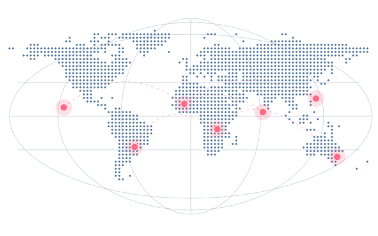

Romance scams
Be cautious when someone builds trust quickly, avoids live calls and then asks you to send money.
Global scam awareness
Share what happened, recognise warning signs and help others make safer decisions online.

Accounts shared by community members and reviewed before publication.
Loading reports…
Look for patterns when a conversation starts to feel off.
Be cautious when someone builds trust quickly, avoids live calls and then asks you to send money.
Pause before acting on an unexpected payment request, a guaranteed return or an urgent transfer.
Verify a surprising message through a number or profile you already know and trust.
Describe your own experience and distinguish what you saw from what you suspect. Share relevant details you can stand behind. Keep threats, harassment and private information out of your report.
Reports are reviewed before publication. Published reports reflect community accounts and may include allegations that remain unverified.
Authorised admins review your report and evidence in private storage. They use your WhatsApp number only to follow up about your submission. Your WhatsApp number and original attachments stay private. Only a separately reviewed public summary can appear in the feed.
Leave out passwords, financial details, home addresses, identity documents and private details about other people.